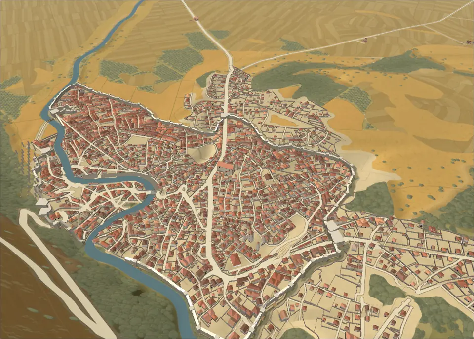
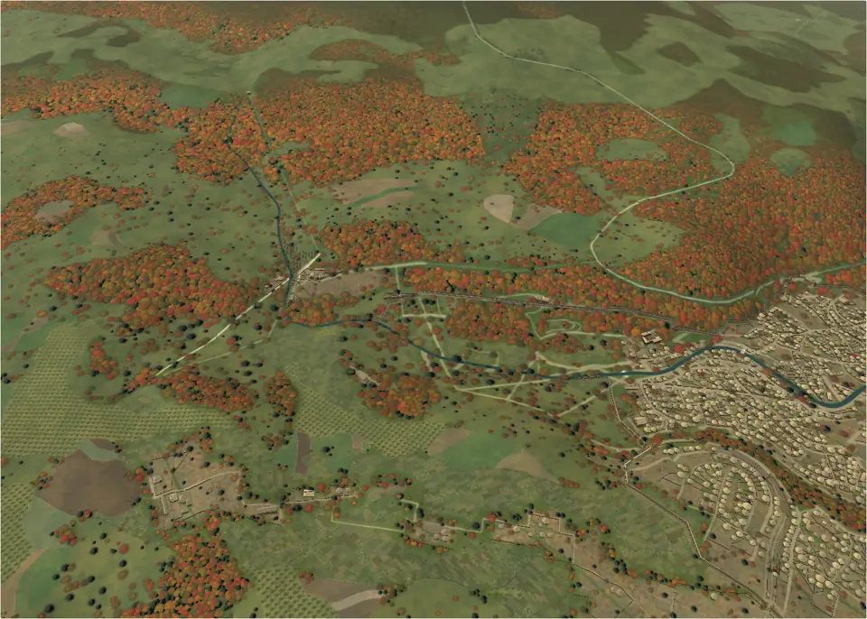
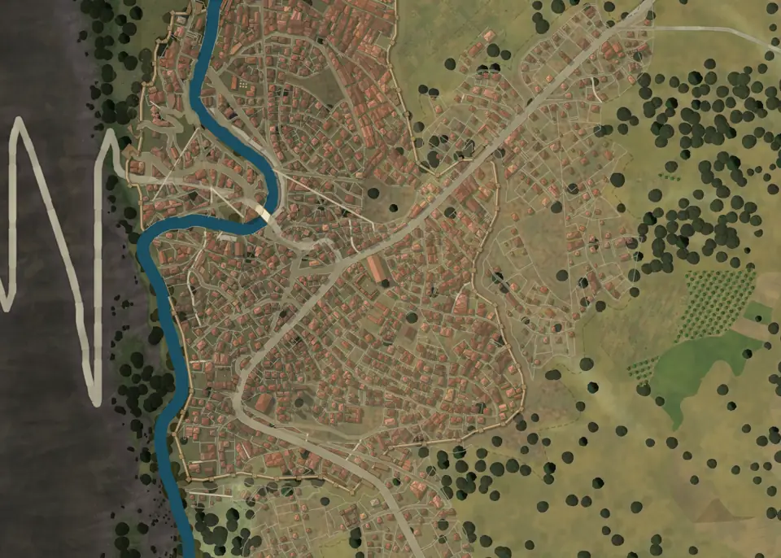
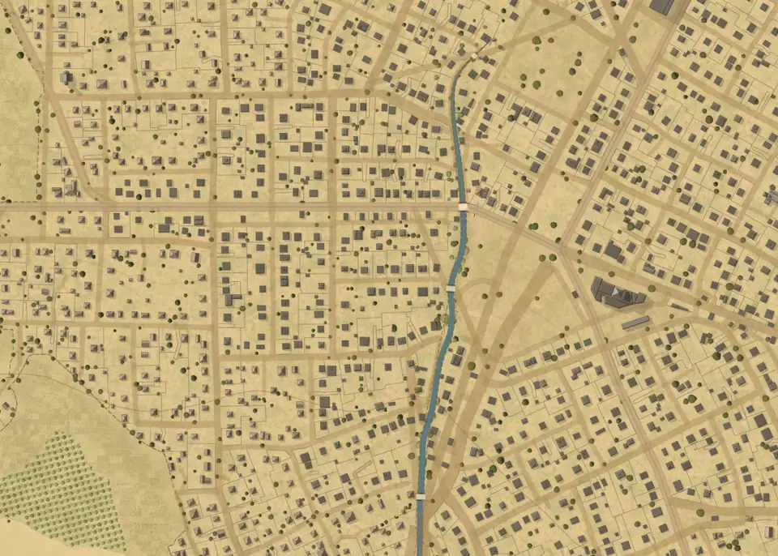
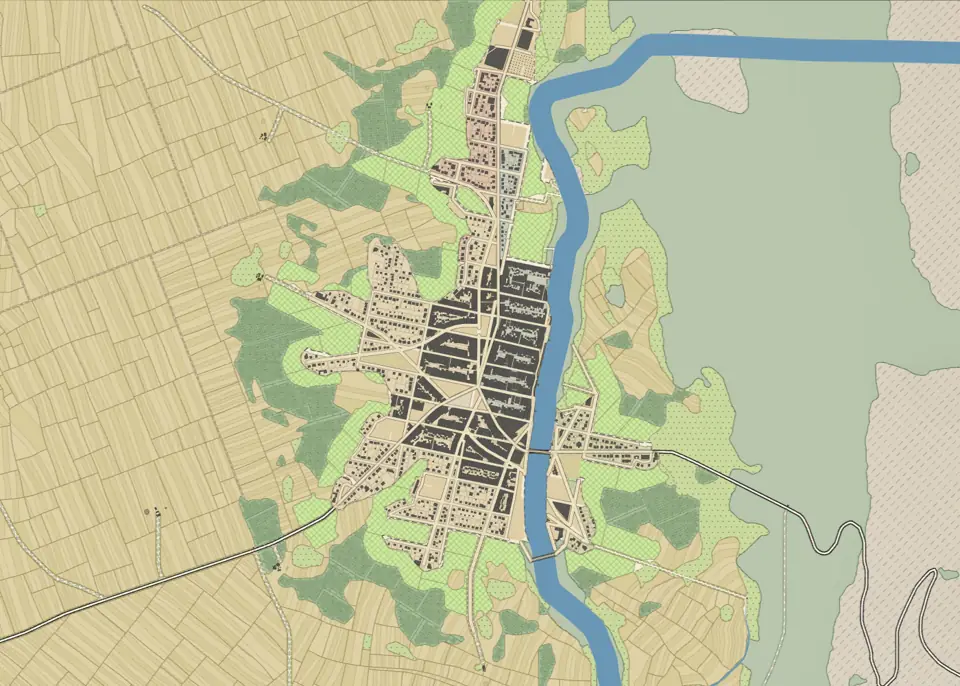
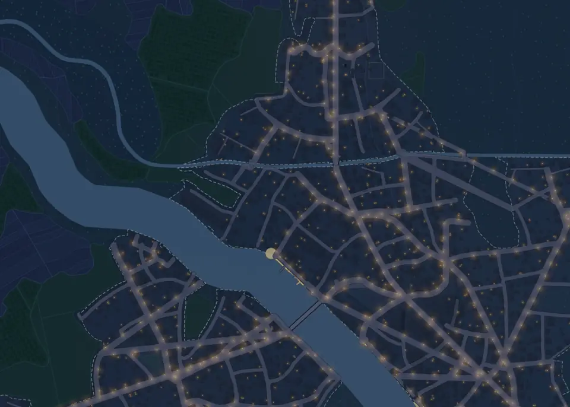
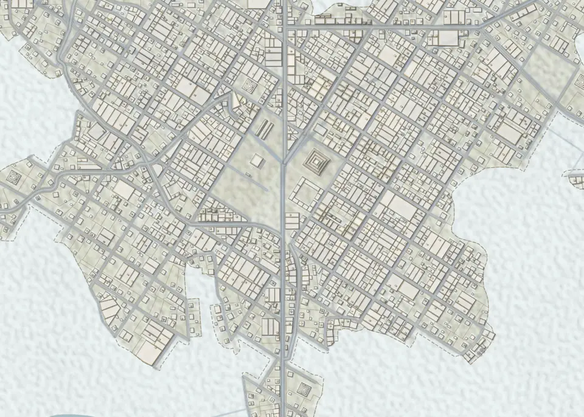
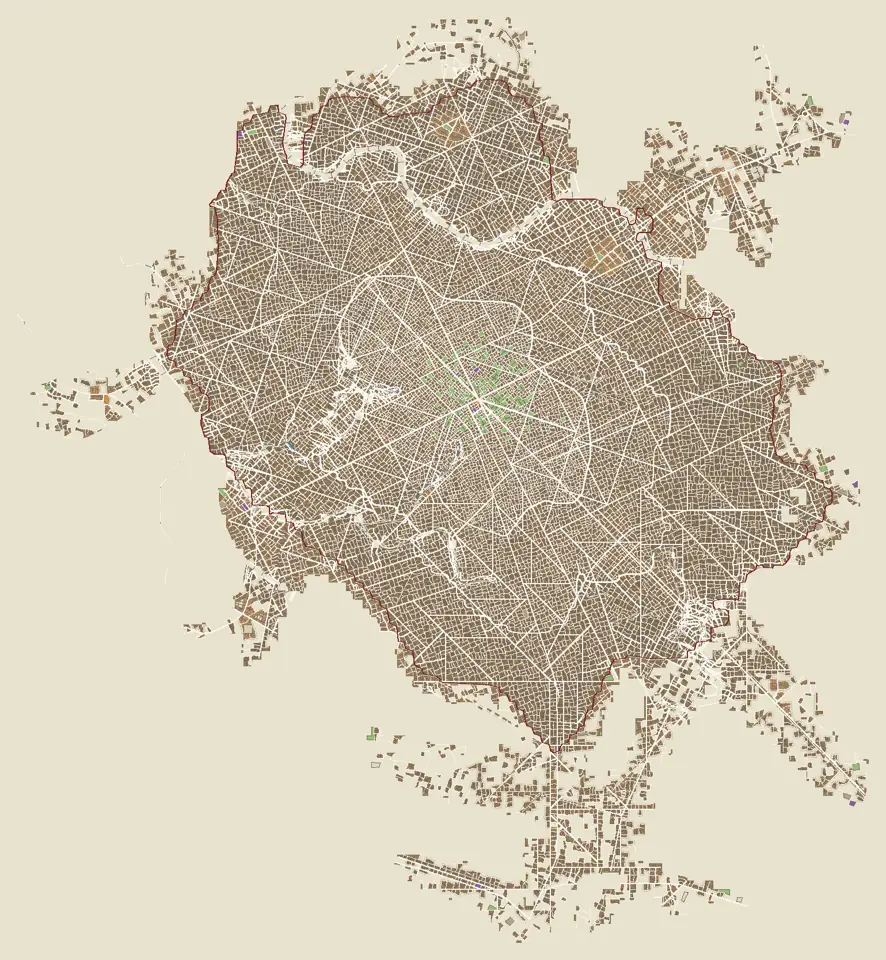

From the height field to the last roof.
Magna Urbis generates landscapes, settlements and towns for maps and tabletop games. This atlas follows a world through every stage the app runs, says what each stage computes, which method it uses, what you can change, and where the result is still an approximation.
Inspired from the start by Watabou’s Medieval Fantasy City Generator. Neural relief distilled from Alexander Goslin’s Terrain Diffusion.
A recipe, four families, one retained world
How to read the app and this atlas.
A Magna Urbis world is described by a recipe: the seed, the map size, the relief source and every setting. The same recipe on the same engine gives the same world, which is why a share link or a saved project is enough to rebuild a map.
The app runs the recipe as stages grouped in four families. The region builds the ground, its water and its natural cover. Settlements place towns, villages, farms and the roads between them. Cities build one town at a time, from its footprint to its roofs. The map draws all of it in one of seven styles, in 2D or 3D. Each family keeps its products, so changing a setting reruns only the stages downstream of it, and changing the look of the map never reruns generation.
How the stages are documented
Every stage in the app has a card in this atlas, under the chapter that explains it. A card says what the stage computes and why, the method actually used in the code, its inputs and outputs, the controls and their visible effect, and where it runs. Optional stages can be switched off in the app; required ones cannot.
Relief: three sources, one surface
Procedural landscape evolution, neural diffusion or an imported heightmap.
The relief is a signed height field in metres above sea level, kept at a fixed physical resolution for the whole run. It comes from exactly one of three sources, and all three end in the same shared finishing chain, so everything downstream reads one kind of surface.
Procedural relief
Perlin (2002) gives the coherent gradient noise this source starts from, and Tricard et al. (2019) the phasor noise used for oriented detail. The procedural source starts from coherent noise, shaped by optional painted zones (plain, hills, mountains, high mountains). Zones are masks that steer the operators; they never set an elevation directly. Seeded volcanoes and calderas add lobed rims, breaches and nested vents.
The incision solver is the implicit stream-power method of Braun and Willett (2013). The heart of the chain is a bounded landscape evolution on the regional grid: each cycle applies tectonic uplift, routes water downhill, incises channels with a stream-power law, then relaxes slopes with thermal collapse and diffusion. The result is reconstructed on the fine grid with a domain warp, calibrated to the amplitude of the chosen relief family, given ridged or phasor-noise detail and a last pass of surface erosion. Since November, every surface operator scales with the cell size, so the same recipe gives the same landforms on a 5 km or a 50 km map.
Where the coast is cut
The land–sea cut is a stage of its own that can be moved along the chain: right after the initial noise by default, or later, after relaxation, calibration, detail, surface erosion or datum normalisation. Whatever happens after it, the finishing chain reapplies the geographic cut so the chosen coastline survives, then erodes it.
Imported heightmaps
An imported or library heightmap is resampled into the frame, scaled vertically, given a datum and cropped. It skips the generative stages but goes through the same finishing.
Stages in this chapter
Relief sourcerelief-sourceChooses where the elevations come from and fixes the frame of the whole run: seed, square map width in metres, landform scale and compute backend.
- What and why
- Chooses where the elevations come from and fixes the frame of the whole run: seed, square map width in metres, landform scale and compute backend. Everything downstream is deterministic given this recipe, so the source is the first line of the recipe and of the share link.
- Method
- Procedural: coherent noise plus a bounded landscape-evolution simulation (the stages below). Neural: a three-stage diffusion model (coarse, base, decoder) sampled on a finite window. Imported or library heightmap: a raster resampled into the frame. The three paths converge on the same retained height field, in metres above sea level, and every later stage reads only that field. The relief is size-independent: surface erosion, thermal relaxation and diffusion scale with the cell size.
- In and out
- In: source kind, seed, width, landform scale, optional file. Out: the recipe that decides which of the stages below run.
- Controls
- Source mode (procedural, neural, heightmap, library), seed, extent presets, heightmap library and import.
- Runs on
- Selection only. The relief itself runs on the native Rust service, in WebAssembly, on WebGPU or, for the neural source, in the browser or in the optional Python/CUDA service. Backends are part of the recipe: CPU and GPU solvers are not bit-identical.
- Code
- rust/crates/terrain/src/engine.rs, web/src/v2/stageRegistry.ts
Input climaterelief-climateSets the climate as an initial condition: temperature, its seasonal spread, precipitation and its variability.
- What and why
- Sets the climate as an initial condition: temperature, its seasonal spread, precipitation and its variability. They reach the neural model before diffusion, then feed climate-driven erosion presets, the water budget of lakes, forest, and beach width.
- Method
- Four numbers (temperature, temperature spread, precipitation, precipitation variability) are stored in the recipe; a preset (temperate, oceanic, Mediterranean, arid, cold, tropical) fills them and sets erosion regimes such as tropical incision times 1.8 or arid times 0.35. The regional biome stays a separate choice, and switching the forest off does not switch the climate off.
- In and out
- In: a preset or four values. Out: climate inputs read by the neural stages, erosion, hydrology and natural cover.
- Controls
- Climate preset (icon row in the top frame of Region) and the four values.
- Runs on
- Free: it only parameterises other stages. Not available with the classic terrain engine.
- Code
- web/src/v2/stageRegistry.ts, rust/crates/terrain/src/erosion.rs
Drawing baserelief-maskLets the author impose where plains, hills, mountains and high mountains go.
- What and why
- Lets the author impose where plains, hills, mountains and high mountains go. It is an interactive input, not a kernel: painted zones replace the automatic layout while the rest of the chain is unchanged.
- Method
- Painted zones are operation masks, never elevations: five channels on a coarse grid of 8 to 128 cells a side, filled with brush radius and falloff, with undo history. When the mask is active the Rust zone generator evaluates each painted zone with its preset; unpainted ground stays transparent in the editor. Zone maps and heightmaps can be imported and exported.
- In and out
- In: brush strokes, imported zone map. Out: a zone field used as the structural layout of the next stages.
- Controls
- Sketch tool and paint brushes (zone class, size, falloff), eraser, history, import and export; the stage switch toggles between automatic and manual layout while keeping the painted zones.
- Runs on
- Cheap: a raster edit plus one zone generation on the native engine or in WebAssembly.
- Code
- rust/crates/terrain/src/terrain_zones.rs, web/src/v2/reliefPaint.ts
Grids and buffersrelief-gridsAllocates the two resolutions of the simulation: a coarse regional grid on which the landscape evolves, and the retained surface on which details are added.
- What and why
- Allocates the two resolutions of the simulation: a coarse regional grid on which the landscape evolves, and the retained surface on which details are added. Resolution is a budget: finer grids resolve narrower valleys but cost more per cycle.
- Method
- The retained field is always 1024 by 1024, so a 5 km map has 4.88 m samples and a 50 km map 48.83 m. The compact preset simulates a padded domain 1.44 times the map width; its side targets a cell width (100, 65 or 40 m for fast, balanced, detailed), rounded up to a multiple of 16 and clamped to 64 to 384 cells. Per-cycle uplift and incision are rescaled so the cumulative dose stays comparable.
- In and out
- In: width, landform scale, quality. Out: regional and surface dimensions and working buffers.
- Controls
- Output resolution, compact quality (fast 8 cycles, balanced 12, detailed 20), regional and surface grid sizes.
- Runs on
- Allocation only. Widening the map does not raise the output resolution, and at large extents the 384-cell cap makes the regional cell wider than the target. Not shown for finite-window reliefs.
- Code
- rust/crates/terrain/src/engine.rs, rust/crates/terrain/src/erosion/pipeline.rs
Initial noise and upliftrelief-noiseBuilds the starting surface and the tectonic forcing that the erosion cycles will carve.
- What and why
- Builds the starting surface and the tectonic forcing that the erosion cycles will carve. Mountains, hills, valleys, canyons, plains and high mountains differ by their uplift pattern and noise recipe. This is a landscape shape, not a plate-tectonic simulation.
- Method
- Octaves of coherent simplex noise with domain warping, h = shape + sum a_k N(f_k (x + w)). Mountain regimes get a continuous regional weight (no clamped band) that multiplies uplift along a ridge skeleton, so crests exist before erosion and join the drainage instead of being masked by late texture. Volcanoes and calderas are drawn from the seed with a lobed rim, a breach and nested vents.
- In and out
- In: seed, relief family, noise scale, crest strength. Out: initial regional heights and uplift field.
- Controls
- Regional noise scale and structural crest strength.
- Runs on
- One pass per regional cell on the native Rust generator (GPU kernels exist for the browser). The CPU and GPU shapes agree statistically, not bit for bit.
- Code
- rust/crates/terrain/src/generation_noise.rs, rust/crates/terrain/src/noise.rs
Coast formationrelief-coast-cutApplies the land/sea cut that deforms the relief into islands, bays and mainland sectors.
- What and why
- Applies the land/sea cut that deforms the relief into islands, bays and mainland sectors. By default it runs right after the initial noise; it can be moved later in the chain.
- Method
- The cut can be placed after the regional relaxation, amplitude calibration, ridged detail, surface erosion or datum normalisation. Later operations may alter the relief, so the finishing stage reapplies the geographic cut to preserve a coast, then runs coastal erosion. Intermediate states are kept in memory and invalidated from the first changed dependency.
- In and out
- In: heights, coast plan. Out: heights deformed toward the chosen land/sea layout.
- Controls
- Stage switch and the position of the cut in the chain (quick control).
- Runs on
- One pass over the grid, native Rust or GPU. Hidden for finite-window reliefs.
- Code
- rust/crates/terrain/src/coast.rs, rust/crates/terrain/src/erosion/pipeline.rs
Regional evolutionrelief-regionalLets rivers and slopes organise the surface: uplift raises ground, water routes along the steepest path and cuts valleys, hillsides slump, and diffusion softens what is left.
- What and why
- Lets rivers and slopes organise the surface: uplift raises ground, water routes along the steepest path and cuts valleys, hillsides slump, and diffusion softens what is left. After a few cycles the noise has become a connected drainage with ridges, valleys and fans.
- Method
- Each cycle is a dependent sequence. Uplift; Priority-Flood (Barnes et al.) drainage from the outlets by increasing height, with sills of closed basins carved by a fraction (0.1) of their depth per step while basins fill with sediment (multiplier 3); flow accumulation split between two downhill neighbours on triangular facets (D-infinity, Tarboton); implicit stream-power incision, dh/dt = U - K A^m S^n, solved downstream first after Braun and Willett, with capped contribution and damped response on gentle slopes; thermal relaxation above the talus angle; hillslope diffusion. Graph convergence is checked and retried rather than assumed after a fixed number of relaxations.
- In and out
- In: initial heights and uplift. Out: evolved regional heights, drainage area and flow directions.
- Controls
- Uplift, regional thermal and diffusion rates, biome, cycle count; the climate preset scales hydraulic incision and thermal rates. Thermal and diffusion can be disabled separately; drainage and incision cannot, because incision reads the flow data.
- Runs on
- Dominates the procedural cost, which grows as cycles times regional cells. Native Rust solver (Priority-Flood lives in the terrain crate) or WGSL kernels, whose topologies may differ. The erosion dose is an intensity, not years, and sediment mass is not conserved globally.
- Code
- rust/crates/terrain/src/erosion/pipeline.rs, rust/crates/terrain/src/priority_flood.rs, rust/crates/terrain/src/erosion.rs
Final regional relaxationrelief-relaxRemoves the artefacts of the last evolution cycle (fresh pits, steep one-cell steps) without adding uplift, so reconstruction starts from a settled, drainable surface.
- What and why
- Removes the artefacts of the last evolution cycle (fresh pits, steep one-cell steps) without adding uplift, so reconstruction starts from a settled, drainable surface.
- Method
- A last sill-carving and drainage pass followed by thermal relaxation, using the same kernels as the cycle but with no uplift term.
- In and out
- In: evolved regional heights. Out: relaxed regional heights and drainage.
- Controls
- Stage switch and the final sill-carving amount.
- Runs on
- One extra pass at regional resolution; negligible next to the cycles.
- Code
- rust/crates/terrain/src/erosion/pipeline.rs
Reconstructionrelief-reconstructResamples the coarse regional field onto the 1024-square retained surface.
- What and why
- Resamples the coarse regional field onto the 1024-square retained surface. The interpolant matters: an interpolating spline can overshoot and invent pits or ridges that would then misguide hydrology.
- Method
- Either a bounded bicubic interpolation (cubic convolution) or a positive cubic B-spline; the compact preset uses the B-spline, whose non-negative weights cannot overshoot. A domain warp displaces the lookup coordinates so that valley lines do not follow grid axes; its multiplier sets the strength.
- In and out
- In: relaxed regional heights. Out: full-resolution surface heights.
- Controls
- Reconstruction method (engine default, bounded bicubic, positive B-spline) and the domain warp multiplier.
- Runs on
- Linear in output cells (about one million); native Rust, fused with later passes on GPU.
- Code
- rust/crates/terrain/src/engine.rs
Amplitude calibrationrelief-calibrateMakes the relief amplitude predictable: after erosion the highest points depend strongly on the seed, so the field is rescaled to the amplitude of the chosen relief family.
- What and why
- Makes the relief amplitude predictable: after erosion the highest points depend strongly on the seed, so the field is rescaled to the amplitude of the chosen relief family.
- Method
- The 99th percentile of heights is measured and the field is scaled so that it matches the family target; a percentile ignores the rare spikes that a maximum would obey. Off, the evolved physical amplitude is kept.
- In and out
- In: surface heights. Out: rescaled heights (one multiplicative factor).
- Controls
- Stage switch only; the target comes from the relief family.
- Runs on
- A histogram or sort of about one million values; negligible.
- Code
- rust/crates/terrain/src/engine.rs
Ridged detailrelief-detailAdds fine rocky texture on slopes, which the coarse regional grid cannot carry.
- What and why
- Adds fine rocky texture on slopes, which the coarse regional grid cannot carry. It precedes surface erosion so that the next stage can organise and soften it instead of leaving raw noise.
- Method
- A ridged multifractal term (1 - |n| of coherent noise, summed over octaves) modulated by slope and added to the surface heights. Off by default in the compact preset, on in the classic one.
- In and out
- In: calibrated heights. Out: heights with fine ridges.
- Controls
- Detail amplitude in the erosion tuning.
- Runs on
- One pass per surface cell; negligible.
- Code
- rust/crates/terrain/src/erosion/pipeline.rs
Surface erosionrelief-surfaceRuns the regional erosion operators at the full 1024-square resolution for a few cycles, to carve small gullies and soften the ridged detail.
- What and why
- Runs the regional erosion operators at the full 1024-square resolution for a few cycles, to carve small gullies and soften the ridged detail. Disabled by default in the compact preset, which relies on the Phasor stage instead.
- Method
- Priority-Flood routing, D-infinity accumulation, implicit incision, thermal and diffusion passes, with a routed or strict flow mode for depressions and optional sill carving. Rates scale with the cell size, so the result does not depend on the map width.
- In and out
- In: detailed surface. Out: eroded surface and its drainage.
- Controls
- Iterations, incision, carving, routed or strict flow, thermal rate, diffusion.
- Runs on
- Linear in surface cells times cycles; native Rust or GPU.
- Code
- rust/crates/terrain/src/erosion/pipeline.rs, rust/crates/terrain/src/erosion.rs
Datum normalisationrelief-datumPins the lowest ground to a known height so the land floor is stable across seeds: sea level, coasts and lakes are defined relative to it.
- What and why
- Pins the lowest ground to a known height so the land floor is stable across seeds: sea level, coasts and lakes are defined relative to it.
- Method
- The 1st percentile of heights is shifted to 1 m. Independently, the positive land-input floor of 0.3 m is always enforced for later stages.
- In and out
- In: eroded heights. Out: shifted heights.
- Controls
- Stage switch (the 0.3 m floor stays required).
- Runs on
- A percentile and an addition; negligible.
- Code
- rust/crates/terrain/src/engine.rs
Phasor detailrelief-phasorAdds sub-regional ridges and ravines whose crests follow the contour lines of the terrain, which plain noise does not do.
- What and why
- Adds sub-regional ridges and ravines whose crests follow the contour lines of the terrain, which plain noise does not do. It is optional on either preset and changes the physical heights.
- Method
- Phasor noise as used for terrain amplification (Tricard et al. 2019; Grenier et al. 2024): each octave sums jittered Gabor impulses, z = sum w_j exp(i phase_j), with carrier directions along the regional contour tangent and a bounded triangle-like profile. At most three octaves, wavelength ratio 3, base wavelength clamp(scale/24, 48, 160) m; amplitude min(0.025 wavelength, 0.12 slope wavelength), fading on flat ground, valley floors and near sea level. Wavelengths below four output cells are suppressed.
- In and out
- In: surface heights and slope. Out: heights plus detail.
- Controls
- Phasor enable and intensity (zero turns it off).
- Runs on
- Fused into the final output-packing pass, so it needs no full-size intermediate texture. At 50 km most small octaves vanish below the cell size. The detail is not a physically evolved drainage network.
- Code
- web/src/ui/terrainGpu.ts, web/src/ui/terrainWgsl.generated.ts
Heightmap fitrelief-heightmap-fitBrings an external raster into the same frame as generated terrain: physical width in metres, heights in metres above sea level, positive land floor.
- What and why
- Brings an external raster into the same frame as generated terrain: physical width in metres, heights in metres above sea level, positive land floor. It is the only relief stage for an imported or library map.
- Method
- Crop to the chosen window, interpolated resampling to the retained grid, vertical scale and datum offset, enforcement of the land floor. No erosion is applied unless the posterior stages are switched on.
- In and out
- In: image or raster, crop, vertical scale, datum. Out: the retained height field.
- Controls
- Heightmap fit widget (crop, datum), height scale, treatment of imported sea.
- Runs on
- Cheap, CPU only. A heightmap of low native resolution is only upsampled: no geological detail is created.
- Code
- web/src/v2/heightmapLibrary.ts, rust/crates/terrain/src/engine.rs
Neural relief
A diffusion model conditioned on climate and an optional sketch.
The entry point of the neural relief is Infinite Generation: Alexander Goslin’s InfiniteDiffusion and Terrain Diffusion, described in InfiniteDiffusion: Bridging Learned Fidelity and Procedural Utility for Open-World Terrain Generation (arXiv 2512.08309). Its idea is what makes a learned terrain usable in a procedural world: windows generated lazily, consistent with the seed and independent of the visiting order, so the terrain has no edge and no seams. The models Magna Urbis runs are distilled from the Terrain Diffusion models and follow the method of that paper; the distillation and the browser runtime are developed in Neural Earth.
Like Terrain Diffusion, the models use the diffusion formulation of Karras et al. (2022, 2024). The neural source samples a three-stage diffusion model trained on real elevation data. A coarse stage at 7.68 km per cell is conditioned on the climate (temperature, precipitation and their variability) and on an optional sketch. A base stage refines it to 240 m, and a decoder brings it to 30 m with an optional amplification that adds a residual on top of the retained spline. Each stage is sampled in global tile coordinates with a halo, so tiles join without seams.
The model runs in the browser through Rust compiled to WebAssembly with WebGPU, or in the optional local Python service with CUDA. Only the decoded terrain is exposed; the intermediate stages have no separate preview.
Stages in this chapter
Neural coarse diffusionrelief-neural-coarseFirst of three learned stages: it draws the continental-scale layout (land and sea, major mountain belts) of the finite window from noise, conditioned on seed, climate and position.
- What and why
- First of three learned stages: it draws the continental-scale layout (land and sea, major mountain belts) of the finite window from noise, conditioned on seed, climate and position.
- Method
- A diffusion model in the EDM family (Karras et al.) with few-step consistency-style sampling (Song et al.), used in the InfiniteDiffusion arrangement (Goslin) where tiles are sampled in global coordinates so a window can be extended without a seam. The coarse stage works on a low-resolution grid of the window.
- In and out
- In: seed, window position and size, climate values, model weights. Out: coarse height and the latents the next stage is conditioned on.
- Controls
- Coarse model, fidelity, land scale, sampling steps and the four noise-climate values.
- Runs on
- Inference in Rust with WebGPU in the browser, or PyTorch/CUDA in the optional Python service on :8793; weights are external and loading weighs on the first call. The window is finite: no infinite world is tiled automatically.
- Code
- rust/crates/neural, rust/crates/neural-wasm
Neural base diffusionrelief-neural-baseRefines the coarse layout into a base terrain with coherent valleys and ridges at intermediate scale, still conditioned on the coarse result so that large features are not redrawn.
- What and why
- Refines the coarse layout into a base terrain with coherent valleys and ridges at intermediate scale, still conditioned on the coarse result so that large features are not redrawn.
- Method
- A second diffusion stage conditioned on the coarse output sampled at matching coordinates; tiles carry a halo so neighbours agree on their overlap. A five-bin target histogram and a relief scale steer the amount of relief.
- In and out
- In: coarse output, seed, position. Out: base-resolution heights.
- Controls
- Base model, relief mode, scale or fixed value, the five histogram bins and their presets.
- Runs on
- Same inference backends as the coarse stage; cost grows with the window area at base resolution.
- Code
- rust/crates/neural, rust/crates/neural-wasm
Neural decoderrelief-neural-decoderProduces the final metre-scale heights from the base terrain (decoder), adds detail below the model’s own resolution (amplification) and fits the result to the requested extent.
- What and why
- Produces the final metre-scale heights from the base terrain (decoder), adds detail below the model’s own resolution (amplification) and fits the result to the requested extent.
- Method
- The decoder turns base latents into heights. Amplification samples a reference on its native 30 m lattice, subtracts its coastal base and adds only the residual to the retained spline, with a gain near zero elevation that preserves the land or sea sign; levels 1 to 6 use cell = 30 * displayScale / 2^level, and level 0 returns the retained spline unchanged.
- In and out
- In: base latents or the retained height grid, width, seed. Out: refined heights.
- Controls
- Decoder model and the detail level.
- Runs on
- Browser (Rust and WebGPU) or Python/CUDA service. A decoder-backed branch needs the original neural world; procedural and imported sources run amplification without weights. A local window cannot supply its own upstream discharge, so hydrology on a window is a compatibility check, not globally correct catchments.
- Code
- rust/crates/neural, rust/crates/neural-wasm
Finishing the surface, and the world below it
Shared operators every relief goes through, and the optional underdark layer.
Whatever the source, four operators finish the surface. Fractal refinement adds slope-dependent detail below the source cell size, with its own Hurst exponent, lacunarity and octaves. Fluvial conditioning breaches or erodes depressions so water can leave the land. Wind transport moves material along an azimuth for dunes and loess. Coastal erosion shapes the chosen shoreline.
Underdark
The underdark is a world layer, not a stage: when chosen, it carves the finished surface once, before hydrology, into a cave world. The relief becomes the rock above; drainage becomes the tunnel network.

Stages in this chapter
Fractal refinementrelief-refineAdds plausible detail below the source cell when the view zooms in, so close-ups do not show a smooth interpolated surface.
- What and why
- Adds plausible detail below the source cell when the view zooms in, so close-ups do not show a smooth interpolated surface. It never changes the retained source used by hydrology.
- Method
- Fractional Brownian detail summed over octaves: amplitude proportional to wavelength^H (Hurst exponent), wavelengths divided by the lacunarity from a start wavelength given in source cells. The amplitude is modulated by the local slope, (slope + flat)^gamma, so flats stay calm and steep ground gets rough, with a separate shore term.
- In and out
- In: the retained height field and the camera region. Out: refined heights for that region only.
- Controls
- Refinement switch, amplitude, Hurst exponent, lacunarity, octaves, start wavelength, slope, flat and shore terms, reset.
- Runs on
- Evaluated per displayed region on the fly; cost follows the visible samples, not the map size.
- Code
- web/src/v2/stageRegistry.ts, rust/crates/terrain/src/engine.rs
Posterior fluvial conditioningrelief-conditioningGives the relief a drainage that actually connects, by erosion and breaching applied after the source is final.
- What and why
- Gives the relief a drainage that actually connects, by erosion and breaching applied after the source is final.
- Method
- A conditioner on the routed drainage: stream-power erosion, breaching of spurious depressions, or both. Breach depth and length are bounded so that a pit is opened rather than a canyon. Climate presets set the default strength (0 temperate, 0.7 Mediterranean, 1.5 tropical). On an Underdark world, hydrology runs on the carved surface without this conditioning.
- In and out
- In: retained heights. Out: conditioned heights.
- Controls
- Mode (erosion, breaching, both), strength, maximum breach depth and length.
- Runs on
- Native Rust, linear in cells with the drainage solver. Presets are artistic regimes, not calibrated rainfall-driven evolution.
- Code
- rust/crates/terrain/src/vector_water/conditioning.rs, rust/crates/terrain/src/underdark.rs
Aeolian transportrelief-aeolianShapes arid terrain by wind: dune-like erosion on windward ground and deposition in lee areas.
- What and why
- Shapes arid terrain by wind: dune-like erosion on windward ground and deposition in lee areas. It is a visual regime, not a dune-physics model.
- Method
- A directional transport pass: along the wind azimuth, material is lifted from exposed cells and deposited downwind, capped per pass, and iterated. The arid preset uses 12 passes of at most 0.8 m.
- In and out
- In: heights. Out: heights with wind-redistributed material.
- Controls
- Iterations, wind azimuth, transported metres per pass.
- Runs on
- Linear in cells per pass; the arid preset is the main user. The cold preset does not simulate glaciers.
- Code
- rust/crates/terrain/src/erosion/pipeline.rs, rust/crates/terrain/src/erosion.rs
Coastal finishingrelief-coastsDefines the sea at the end of the relief: marine directions and islands, a signed distance to the shore (positive inland), and a short coastal erosion that gives beaches, cliffs and coves.
- What and why
- Defines the sea at the end of the relief: marine directions and islands, a signed distance to the shore (positive inland), and a short coastal erosion that gives beaches, cliffs and coves.
- Method
- A capsule-based coastline plan (broad mainland sectors, branched islands, offshore rocks) shared by GPU and CPU in FP32. The signed distance modulates heights across the shore, then coastal cycles apply incision, thermal relaxation and diffusion with their own multipliers on the land/sea mask chosen earlier. Zero cycles disables the erosion but keeps the mask.
- In and out
- In: heights, coast settings. Out: heights with a marine mask and shore distance.
- Controls
- Coastal cycles and the incision, thermal and diffusion multipliers.
- Runs on
- A distance computation and a few erosion passes near the shore only.
- Code
- rust/crates/terrain/src/coast.rs, rust/crates/terrain/src/erosion/pipeline.rs
Water: drainage, lakes, rivers and mouths
A drainage graph and a water budget, then vector rivers.
Drainage relies on the Priority-Flood algorithm of Barnes, Lehman and Mulla (2014). Water is computed once on the finished surface by the Rust vector water chain. It first conditions the relief so that every cell can drain, by breaching passes up to 8 m deep with valley-shaped or stepped banks. A Priority-Flood pass then gives every cell a downhill direction and every depression a spill point.
Lakes follow the fill, spill and merge logic of Barnes, Callaghan and Wickert (2021), fed by the annual water balance of Turc (1954). Depressions are where lakes may form, but only if the climate can feed them. For each closed basin the chain computes a water budget from temperature, altitude and precipitation; a basin keeps a lake only where runoff can sustain it and where depth, area and coverage tests pass. The rest are breached or filled. The lake abundance setting moves those thresholds.
Rivers that behave
Once lakes are decided, rivers that pass beside a lake are captured into it, and upstream areas are summed again so discharge stays consistent. River heads can extend up the talweg, spurs shorter than 150 m are dropped, and vector rivers receive a width, a bed and meanders.
Mouth widening follows the exponential estuary shape of Savenije (2005). Mouths are shaped last. A river widens towards the sea or a lake along an exponential profile, as estuaries do, without ever narrowing again, and its water surface ends at sea level without rising seaward. Large rivers on gentle coasts may open into a funnel or tidal estuary.
Stages in this chapter
Rivers, lakes and riverbedswater-hydrologyTurns elevation into water: which hollows hold lakes, which cells drain where, where rivers run and how wide, and how their beds are cut into the ground.
- What and why
- Turns elevation into water: which hollows hold lakes, which cells drain where, where rivers run and how wide, and how their beds are cut into the ground. Settlements, roads and rendering all rely on this one definition of water.
- Method
- Conditioning breaches spurious pits (default depth 8 m) with banks shaped as valley or step cross-sections. Priority-Flood (D8) drainage is followed by a closed-depression water budget: Tz = T - 0.0065 z, L = max(60, 300 + 25 Tz + 0.05 Tz^3), ET = P / sqrt(0.9 + P^2/L^2), runoff r = max(P - ET, 0.02 P, 0.5). Each depression is classed spill or closed (Fill-Spill-Merge, Barnes et al.); closed basins stay lakes if depth, area and coverage tests pass, otherwise they are breached or filled, scaled by the lake abundance setting (0 to 2, default 0.8). Lake shores follow the depth contour, and a river cell beside a lake drains into it, except the lake’s own outlet, with upstream areas re-summed. Headwaters can extend rivers up the talweg, where the ground rises at least 3 percent on both sides within two cells. Rivers shorter than 150 m to a confluence, sea or lake are dropped. River mouths widen monotonically toward the water (exponential, after Savenije), sized by discharge and bank slope, at most half the distance to the nearest other mouth, with a sea-mouth surface ending at 0 m and the bed opened to the sea; large mouths may become funnel or tidal on gentle coasts.
- In and out
- In: retained heights, sea level, temperature and rainfall, hydrology options. Out: water surfaces (lakes, rivers, sea), drainage graph, widths, a conservative obstacle mask for routing, optionally bed-cut heights.
- Controls
- The hydrology group: engine, main river, lake abundance, headwaters, river width and meanders, bank shape, riverbed cuts; the stage switch (off keeps altitudes untouched).
- Runs on
- Native Rust vector water chain (the terrain crate, endpoint /terrain/water); no relief or water work is left in TypeScript-only paths. The obstacle mask is wider than the drawn bank on purpose: it serves path search, not drawing.
- Code
- rust/crates/terrain/src/vector_water/balance.rs, rust/crates/terrain/src/vector_water/lake.rs, rust/crates/terrain/src/vector_water/rivers.rs
Climate and natural cover
Forests, clearings and beaches from climate, relief and water.
The climate entered with the relief (mean temperature, its seasonal spread, precipitation and its variability) is reused for the natural cover. Forest density follows moisture, temperature and slope; banks and beaches have their own rules, and beach width follows the climate. The forest field is a product of the region: settlements clear it, and the map draws it as symbols, painted brushes or a procedural canopy depending on the style.
Seasons do not change the generated world. They are applied at render time from a calendar of eleven climate zones, which sets the herb tint, leaves, snow cover, river and lake ice and sea ice for each point of the year (see the map chapter).
Stages in this chapter
Natural covercover-climateEstimates what grows where from the input climate, the shape of the ground and the water, so forests, clearings and bare rock follow valleys, slopes and altitude rather than random patches.
- What and why
- Estimates what grows where from the input climate, the shape of the ground and the water, so forests, clearings and bare rock follow valleys, slopes and altitude rather than random patches.
- Method
- Altitude-corrected temperature, rainfall and topographic position act as proxies for biome and moisture. A world-coordinate control field stores cover, potential height, conifer share and tone or disturbance; density is transformed by c_D = 1 - (1 - c)^D. Riparian galleries follow the visible banks, tree centres avoid displayed water, and climate sets the beach width. The coefficients are bounded visual policies, not ecological succession.
- In and out
- In: heights, slope, water surfaces, climate. Out: forest and cover control field used by the renderer and by land use.
- Controls
- Forest on or off, density, clearings.
- Runs on
- Cheap raster passes in the native terrain crate; trees are drawn as instances at close range and averaged as a material at distance.
- Code
- rust/crates/terrain/src/forest.rs, rust/crates/terrain/src/forest_beach.rs, rust/crates/terrain/src/forest_bank.rs
Settlements and the countryside
Where places go, how large they are, and what surrounds them.
Places are chosen on the finished region. Every dry cell gets a site score (water, slope, coast, river crossings, defence), and places are picked greedily with a minimum spacing, each one carving an urban reserve. You can ask for a number of places drawn from a size law, or give an explicit list; a listed place that lands in water is moved to the nearest suitable dry site with a warning, so a list is always honoured.
The size rule is Zipf’s rank-size law (1949). Sizes follow a rank-size law: the place of rank r holds the population of the largest divided by rq, down to a minimum. The number of ranks follows how many places the usable land can hold.
The countryside
Farms are placed within the farmland reach of their parent place, with a few isolated ones farther out. Each takes a farm type from its culture, from the Austrian four-sided farm to the Breton longère, the Apulian masseria, the Japanese minka or the southern African kraal, with its own ground plan and massing. Cultivated land follows the population and stays within walking distance of the farmers. Hamlets and villages get a chapel just outside, and wayside shrines mark junctions. Small places are built in the background after a run.
Remote places
Rare sites are chosen by situation: summits, crags, cliff ledges, gorges, islets, deep forest or marsh islands. Their access is a cliff stair, rock steps, a causeway, a rope bridge, a tunnel or a track, and an access line that meets a road ends on it rather than leaving a spur.
Stages in this chapter
Sites and urban reservessettle-sitesChooses dry, buildable locations for places and reserves the land a settlement of a given population will need, then adds the countryside around them: farms, chapels, shrines and rare remote places.
- What and why
- Chooses dry, buildable locations for places and reserves the land a settlement of a given population will need, then adds the countryside around them: farms, chapels, shrines and rare remote places.
- Method
- Dry cells are scored by slope, fresh-water access, shore, defence, culture preferences (log-weighted: a times-3 preference adds about 0.55, a times-0 weight about -1.96) and site type; the greedy pick keeps a minimum spacing and carves urban reserves. Requests follow a Zipf-like list or an explicit list; a refused wet position is moved to a forced dry site with a warning, and an explicit list always places every requested settlement. Farms sit within the farmland reach of their parent place plus a few isolated ones; farm type, plan and massing come from the culture (40 farm types). Hamlets and villages get a chapel just outside, shrines stand at junctions, and the cultivated area follows population. Remote places (summit, crag, cliff ledge, gorge, islet, deep forest, marsh island) are rare and get an access: stair, rock steps, causeway, rope bridge, tunnel or track. Toll houses, ferries, inns and border posts are read from the finished network.
- In and out
- In: relief, water, climate, culture and settlement specs. Out: placed settlements with coordinates, class, population and reserve, plus countryside objects and remote places.
- Controls
- Number of places and main culture, main place name, site type and position, site-type weights, remote places, background construction of small places (default population 500).
- Runs on
- Native Rust grid scan and scoring; fast compared with relief. A site is not an economy: a river site is not automatically a navigable port.
- Code
- rust/crates/core/src/settlements/placement.rs, rust/crates/core/src/settlements/countryside.rs, rust/crates/core/src/settlements/remote.rs
Place hierarchysettle-hierarchyGives each placed site a population and an importance rank, which later drive roads, programme demand and city size.
- What and why
- Gives each placed site a population and an importance rank, which later drive roads, programme demand and city size.
- Method
- A rank-size law: rank r holds the main population divided by r^q, down to a minimum population, with as many ranks as the density of places on usable land allows. Shared demographic class bands give the class of each size. The law is a distribution control; the engine does not show that Zipf behaviour emerges from trade.
- In and out
- In: placed sites, usable land. Out: population, class and rank per settlement.
- Controls
- Main-place population, placement mode and distribution, Zipf exponent, minimum population, population jitter, per-class counts.
- Runs on
- Negligible; native Rust.
- Code
- rust/crates/core/src/settlements/demographics.rs, rust/crates/core/src/settlements/demographic_classes.json
Regional roads
Which places to link, then how a road actually crosses the land.
Roads are built in two steps: decide which places to connect, then find physical paths. The candidate links are a Delaunay graph of the places, reduced to a minimum spanning tree, plus shortcuts where the tree makes a long detour.
Routing follows Galin, Peytavie, Maréchal and Guérin (2010): a least-cost path over the terrain with an extended set of moves. Each link is then routed by a least-cost search over the terrain. A move can go to any of 24 neighbours (the 8 adjacent cells, knight moves and longer (1, 3) moves), and the search state includes the arrival heading, so turns, slopes and river crossings all have a price. The most important trips are routed first. Reusing an existing road is cheaper than building one, and cells right beside a road cost more than the road itself, so routes either share a trunk or keep a clear distance.
All paths are written into one graph whose vertices are grid cells pinned to places or map exits. Crossings become junctions, small triangles lose their longest side, and chains of degree-two vertices become links that take the class of the most important trip using them. Surface follows the development level and the culture. Toll houses, ferries, inns and border posts are read from the finished network.
Stages in this chapter
Regional roadssettle-roadsLinks places by physical roads.
- What and why
- Links places by physical roads. The demand graph says which places should be connected; the least-cost search finds where each road can actually run on the terrain.
- Method
- Demand graph: Delaunay triangulation of the places, its minimum spanning tree, plus shortcuts where the tree detours. Routing: least-cost search with 24 moves (the 8 neighbours, knight moves and (1,3) moves) whose state is a cell plus the arrival heading; turns are priced and capped per class, trips are routed most important first, and reuse is priced per move, so cells beside a road cost more than the road and routes either share or keep apart. All paths go into one graph whose vertices are grid cells pinned to places or map exits: crossings get a junction, small triangles lose their longest side, and degree-2 chains become links with the class of the most important trip. Surface follows development level and culture. Remote access lines are passed to the router. In display, tracks and footpaths stay readable under canopy while country roads and above clear a corridor, in 2D and 3D.
- In and out
- In: place hierarchy, terrain, water obstacle mask, culture road profile, remote access lines. Out: one merged road graph with classes, junctions, bridges and fords, handed to the city stages as context.
- Controls
- Regional roads group: density level, surface, class thresholds and grade; the stage switch.
- Runs on
- Native Rust; cost follows grid size and the number of links, over a state space of cells times headings. A low cost is not an earthwork or traffic study.
- Code
- rust/crates/core/src/settlements/roads/search.rs, rust/crates/core/src/settlements/roads/network.rs, rust/crates/core/src/settlements/nodes.rs
The town plan
Footprint, macroplan, streets and quarters, then trimming.
A town is built when you select it, one at a time or all together, by the Rust engine. The chain reads the region, the road graph and the culture of the place.
Kind and footprint
The town's kind (from a lone building or a ruin up to a metropolis) follows its population, culture, site and settlement form. Its footprint spends a land budget on a bounded raster with an anisotropic arrival field, so towns stretch along valleys, roads and shores. A survey of the terrain picks how much slope the plan may accept before the first layout, so mountain towns climb instead of failing.
Neighbouring towns
Towns are generated in a fixed order, largest first. Each town receives the claims of the earlier towns near it, the land they occupy and their edge streets: it keeps off that land, joins those streets, moves its centre if needed and warns when land runs short.

Macroplan, streets and quarters
The macroplan is geography first: it keeps regional road corridors, partitions the dry land, places harbours on waterfronts rooted on dry ground, and lays out walls, gates and cultural phases (core, ring, faubourgs).
Street guidance by a direction field comes from Chen, Esch, Wonka, Müller and Zhang (2008), within the procedural city chain introduced by Parish and Müller (2001). Streets are cut recursively inside each quarter, guided by a direction field, and routed locally around obstacles. Quarters are computed in parallel with one random stream each, so the output does not depend on the number of threads. Streets never lie on water: a wet stretch becomes a bridge deck or stops short of the bank.
Fortifications follow the culture: walls with towers, gates, bastions and ditches, palisades or hedges. A wall can extend an older one, castles take knolls, and walled towns are filled up to the wall street. Springs inside a town receive a water building chosen by its culture, and some cultures add informal quarters at the edge.
Trim
The first plan is generous. Trimming runs a cheap probe of the cadastre, turns blocks that would stay empty into fields or open land and prunes the lanes that served them, until nothing changes (at most eight passes), then runs a door pass after bridges. Loose bank streets, junction triangles and doubled runs are removed.
Stages in this chapter
Compositioncity-compositionDecides the overall shape of a city before streets exist: what kind of settlement it is, how much land it covers, where it can grow, where the harbour and walls go, and how it fits next to other towns.
- What and why
- Decides the overall shape of a city before streets exist: what kind of settlement it is, how much land it covers, where it can grow, where the harbour and walls go, and how it fits next to other towns.
- Method
- The kind (lone building or ruin, hamlet, village, town, city, metropolis) is resolved from population, culture, site and settlement form. The footprint spends a land budget on a raster of at most 192 by 192 cells with an anisotropic arrival field; a terrain survey picks a slope-relaxation level before the first layout. The macroplan puts geography first: regional corridors are kept, dry land is partitioned, and harbours keep only waterfront components rooted on dry ground. Cultural phases (core, ring, faubourg) follow. Towns generate in canonical order (population descending, then key); each receives the land and edge-street claims of earlier close towns, keeps off their land, joins their streets, moves its centre and warns when land is short; an explicit position is accepted anywhere dry. Density follows the phases by default or a gradient (weight 0.5 at a phase boundary falling to 0 at a band distance, never across a town wall).
- In and out
- In: population, culture, terrain, water, regional roads, claims of neighbouring towns. Out: footprint, macroplan sectors, harbour and enclosure geometry.
- Controls
- Sprawl, walls, moat, castle, cathedral, palace, monasteries, port, arena, activities, suburbs, culture and the zone density mode.
- Runs on
- Native Rust on bounded rasters; cheap next to the quarters stage.
- Code
- rust/crates/core/src/urban/kinds.rs, rust/crates/core/src/urban/footprint.rs, rust/crates/core/src/urban/macroplan.rs, rust/crates/core/src/urban/neighbours.rs
Urban roads and streetscity-roadsBuilds the local street network and its bridges.
- What and why
- Builds the local street network and its bridges. It is computed together with quarters by one layout call, and applies to every place or to the checked subset in the list.
- Method
- A guidance field derived from regional access and the culture directs recursive street cuts; each cut becomes a metric ribbon with a width in metres. Streets are routed locally on the physical surface by an anisotropic cost with a reachability flood and answer memory (after Galin et al.). The planar network is cleaned, bank streets are joined, and bridges are graded. Streets never lie on water: a wet run becomes a deck or is trimmed short of the bank. Road pruning removes loose bank streets, junction triangles and doubled runs. Fortification (wall, palisade or hedge with towers, gates, bastions and ditch) and castles on knolls complete the network, and walled towns are filled up to the wall street.
- In and out
- In: footprint, macroplan, culture, terrain, regional crossings. Out: street ribbons with roles, a planar network, bridges and quays, enclosures.
- Controls
- Urban streets section: tissue and street recipe, widths, grades, bridge options.
- Runs on
- Native Rust; spatial edge grids test only nearby edges, and quarters run in parallel with one forked random stream each, so the thread count never changes the result. Needs the Rust urban engine.
- Code
- rust/crates/core/src/urban/network.rs, rust/crates/core/src/urban/routing.rs, rust/crates/core/src/urban/fortification.rs
Quarters and blockscity-quartersShapes the quarters, each keeping its cultural recipe and phase (organic European, bastide, medina, Chinese or Japanese grids, communal, camp and fantasy cultures), and subdivides them into blocks between streets.
- What and why
- Shapes the quarters, each keeping its cultural recipe and phase (organic European, bastide, medina, Chinese or Japanese grids, communal, camp and fantasy cultures), and subdivides them into blocks between streets.
- Method
- Computed in the same layout call as the streets: each quarter makes its recursive street cuts in parallel from its own forked random stream and the results merge in input order. Blocks are the faces between streets; adaptive servicing adds bounded access corridors when a block is too deep for its recipe. Springs get a culture-chosen water building, and shanty quarters (bidonville, riverbank, gecekondu, scrap) are appended last.
- In and out
- In: footprint, macroplan, culture, terrain. Out: quarters, blocks with holes, quays.
- Controls
- Culture and phase mix per quarter, shared with the streets section.
- Runs on
- Native Rust, the dominant city stage: about 80 percent of the generation time. At 8 threads on the fast profile a 10k town takes 2.7 s, 100k takes 13.5 s and 1M about 138 s (down from about 9 minutes).
- Code
- rust/crates/core/src/urban/quarters.rs, rust/crates/core/src/urban/shanty.rs, rust/crates/core/src/urban/springs.rs
Trim unbuilt blockscity-trimRemoves land that nobody builds on.
- What and why
- Removes land that nobody builds on. The footprint is sized by a land budget while the programme stops placing buildings once households and services are covered, so blocks and the lanes serving them would stay empty. It is a post-hoc stopgap: growth by accretion is not implemented.
- Method
- The trim runs on a probe cadastre (one allocation). Every block left without a building becomes open land or fields, and lanes serving only such blocks are pruned, as loose bank streets, junction triangles and doubled runs are. The pass repeats to a fixed point (at most 8 passes), then a door pass after bridges (at most 4). A second pass runs only when a plan signature changed. Bridges, quays and gate connections stay.
- In and out
- In: laid-out quarters, programme. Out: trimmed layout with open land and a smaller network.
- Controls
- Stage switch; programme density indirectly sets what stays.
- Runs on
- Native Rust. A content-addressed memo inside one request avoids recomputing identical block cuts. Probe results are cached.
- Code
- rust/crates/core/src/urban/trim.rs, rust/crates/core/src/urban/probe_cache.rs
Parcels and programme
Who owns which strip of street front, and what each lot is for.
The parcel operators follow Vanegas, Kelly, Weber et al. (2012). Each block is divided into parcels that front a street, with four cutting operators chosen by the culture (strips, perimeter blocks, courts, compounds) and variants for organic towns, camps, ruins and monuments. A parcel must touch an access segment over a real length and contain buildable land; spare cells are merged into occupied neighbours. Parcel ids survive tidying, so edits stick.
The programme then assigns uses. Demand comes from the population and the role tables of the culture: landmarks and large programmes reserve whole blocks first, then trades and shops take street lots, then housing, and leftovers become gardens and yards. Household size is culture data, not a constant. No more than 3 % of the plan may turn housing blocks into commons, parks or cemeteries.
A large town produces a lot of data. Parcels can be returned as JSON or as a compact binary pack; for a town of a million people the pack weighs 151 MB against 536 MB of JSON.
Stages in this chapter
Parcelscity-parcelsCuts each block into lots that a street can serve and a building can occupy.
- What and why
- Cuts each block into lots that a street can serve and a building can occupy. A parcel needs access and room for the smallest compatible building, so the cadastre is built with the architecture’s admission sizes in mind.
- Method
- Four operators produce street-fronting partitions: frontage bands, oriented cuts, competing frontage territories (distance-based, not a straight skeleton) and organic subdivision, in the tradition of constrained frontage subdivision (Vanegas et al.). Variants exist for courts, camps, ruins and monuments. Street contact is a measured interval merged over successive pieces; neighbours come from a spatial index and true collinear overlap. The union of parcels must equal the parent block with no overlap, and parcel ids survive tidying. The programme step then consolidates spare cells into occupied properties. The reply is JSON or the binary pack magna-city-parcels v1 (a 1M town: 536 MB as JSON, 151 MB as a pack).
- In and out
- In: blocks with holes, reservations, local recipe. Out: parcels with family (frontage, compact, court, collective, inherited land), contacts and occupation, as JSON or a binary pack.
- Controls
- Parcels section: operator, family mix and module sizes per culture, rural-urban pressure.
- Runs on
- Native Rust; lot cutting is memoised per block and parallel across blocks. A parcel pack transfers about 3.5 times less than JSON.
- Code
- rust/crates/core/src/urban/parcels.rs, rust/crates/core/src/urban/parcel_pack.rs, rust/crates/core/src/urban/programme_lots.rs
Programmecity-programmeDecides what each block and lot is for: housing, shops, crafts, markets, institutions, storage, gardens.
- What and why
- Decides what each block and lot is for: housing, shops, crafts, markets, institutions, storage, gardens. Demand is stated first, then reserved and allocated, then the real built capacity is counted.
- Method
- Demand by role comes from population, place role, resources, culture and period (services catalogue and roles table). Landmarks and large programmes reserve whole blocks first, then trades take plots, then shops, then housing; leftovers become garden or yard, and no housing block becomes common land, park or cemetery beyond 3 percent of the plan. Household size is culture data: persons per domestic unit, floor per household and the cap per plot are declared per culture family (for example 4.5 persons for European and 7 for Islamic families), with 4.5 only as the fallback when a family declares nothing. Gaps are reported as a realised deficit and a land deficit.
- In and out
- In: lots, place data, culture and services catalogue. Out: role per lot, demand and capacity diagnostics, reserved blocks.
- Controls
- Programme section: place role, intent, resources, density budget and overrides.
- Runs on
- Native Rust, near-linear in lots with a spatial index. Architectural refusals leave real unmet demand.
- Code
- rust/crates/core/src/urban/programme.rs, rust/crates/core/src/urban/roles.rs, rust/crates/core/src/urban/services.json
Buildings and their forms
The displayed building is the planned silhouette, raised.
Building sites are neutral placement intents, streamed from the engine as typed rows. The occupation preview of each lot (a street body, a rear wing, a court range, a nave, a tower) is raised piece by piece by the massing stage: every piece gets its own number of floors, eave height and roof. What you see on the map is therefore the silhouette the plan intended, not a house dropped into a lot.
Floors follow the range of the culture's building tradition. Modern styles add a population ladder: towers appear from about 50,000 inhabitants, Haussmann-style blocks keep five to seven storeys.
The forms engine
Detailed houses come from a forms engine that composes labelled masses into a plan (bar, L, T, court, cross or H) with extras such as outshots, porches, bays, turrets, chimneys and dormers, and covers them with composed roofs: valleys, hips, gablets, gambrels and mansards. Singular buildings (temples, mosques, castles, halls, markets, mills, utilities) come from families shared across cultures. A hybrid style sheet can mix cultures facet by facet, for example the streets of one culture with the houses of another.
The architectural styles catalogue shows what every one of the 115 cultures produces.



Stages in this chapter
Building sites and massingcity-buildingsTurns lot roles into placement intents, then into volumes: every piece of the planned occupation (street body, rear wing, court range, nave, tower) gets its own floors, eave height and roof.
- What and why
- Turns lot roles into placement intents, then into volumes: every piece of the planned occupation (street body, rear wing, court range, nave, tower) gets its own floors, eave height and roof. The displayed building is that planned silhouette raised in volume, not a separate house standing inside it.
- Method
- Building sites are neutral placement intents (polygon, contacts, programme, pack, period, seed) streamed as typed rows, with no dependency on the architecture engine. Massing reads the occupation preview of each lot and assigns storeys from the culture tradition range, plus for modern styles a population ladder (towers from about 50k, Haussmannian 5 to 7 storeys), then eave heights and a roof of the tradition. Roof classes are projected into display categories (flat, dome, cone, hip, pagoda, gable) for the map.
- In and out
- In: parcels with roles and occupation. Out: building sites and massing volumes with roofs.
- Controls
- Placement section: floors per culture, density, building edits; one request per lot.
- Runs on
- Native Rust; pages of sites are produced in parallel and merged deterministically, with identical results at any thread count.
- Code
- rust/crates/core/src/urban/building_sites.rs, rust/crates/core/src/urban/massing.rs
Architecture and housescity-housesGives each admitted building its architecture: labelled masses, roofs, extras and materials, including singular buildings and modern or futuristic styles.
- What and why
- Gives each admitted building its architecture: labelled masses, roofs, extras and materials, including singular buildings and modern or futuristic styles. A refusal leaves an explicit deficit instead of cutting a house to fit.
- Method
- The forms engine composes labelled masses with roles, composed roofs (gable, hip, shed, pyramid, half-hip, gablet, gambrel, mansard, saltbox; flat, dome, cone, barrel, tent) and home plans (bar, ell, tee, court, cross, aitch) with extras (outshot, porch, bay, turret, chimney, dormer). Singular buildings come by family (classical, medieval, islamic, asian, american, african, fantasy, civic, utility, modern, rural). Options: house complexity simple or complex, singular density 0 to 3, back buildings 0 to 1 (default 0.5). A hybrid style sheet weights several cultures per facet (streets, plots, houses, monuments, rural); the catalogue holds 115 cultures (79 historical, fantasy or camp, 27 modern, 8 futuristic, 1 alien). Render tiers: silhouette (the default, the massing itself), compact and detailed, the last two from the native houses crate.
- In and out
- In: building sites and massing, culture and style sheet, physical ground. Out: accepted houses (geometry, facets, supports) and refusals with reasons, counted back into the programme.
- Controls
- House, workshop, mixtures and catalogue sections: complexity, singular density, back buildings, materials, roofs, style mixtures; the stage switch (off keeps massing only).
- Runs on
- Native Rust, parallel pages with a deterministic merge. The detailed tier costs more than the silhouette tier; the 1M town is generated by the engine but neither page can receive it yet.
- Code
- rust/crates/core/src/urban/forms, rust/crates/core/src/urban/house_mix.rs, rust/crates/houses/src
Drawing the map
Seven styles, one recipe per pass, seasons, and two drawing engines.
The map reads the retained world and never changes it. A style is only a preset of a per-pass recipe: ground, relief, vegetation, rural and urban land use, water, roads, buildings, ambience, text and legend each have their own settings, and a customised style is marked with an asterisk.








Seasons
Each of eleven climate zones (temperate, Mediterranean, continental, Nordic, alpine, Arctic, steppe, desert, savanna, tropical, wetland) has a calendar of four seasonal rows: herb tint, leaves, snow, thaw and sea ice. The palette of every vector style follows it, the shaders read the same calendar, and you can edit the year of a zone. Snow is a continuous cover shaped by relief, rivers and lakes freeze only where the ground does, and sea ice has leads, floes and slush. On parchment, seasons change the land use only.
Two engines
The GPU vector engine applies the stencil-then-cover path rendering of Kilgard and Bolz (2012). The ground is drawn by a WebGL2 or WebGPU terrain renderer. Everything vector (water, roads, parcels, buildings, symbols, text) goes through one drawing interface with two back ends: a Canvas 2D engine on the CPU, and a GPU engine that records the drawing calls once into a display list and replays it every frame with the view matrix, using stencil-then-cover fills, extruded strokes and instanced sprites. A band around the view is recorded at each half octave of zoom, so panning and zooming need no new tiles. The GPU engine falls back to the CPU on software GL, a lost context or slow frames.
The 3D view uses WebGPU, with WebGL2 as fallback, and drapes the 2D map on the relief, raises building volumes by sector, and can add trees within 360 m of the camera, which follow the season. You can orbit, walk or fly.
Stages in this chapter
Preset and grounddisplay-terrainChooses the look of the map and paints the ground.
- What and why
- Chooses the look of the map and paints the ground. A style is only a preset of a per-pass recipe (ground, relief, vegetation, rural and urban land use, water, roads, buildings, ambience, text, legend); a customised style shows an asterisk.
- Method
- Styles: atlas, cadastre (1:1250, plain classic, blueprint), topographic, satellite (render-v2 default, render3d, render3d-brush, render, diagnostics for substrate, moisture, vegetation and snow), Painted satellite (satellite-2), parchment (parchment, engraving, illuminated; the default view, adapted to biomes) and a hidden illustration style that falls back to parchment; Satellite and Parchment have Fast presets, and a Copernicus elevation diagnostic exists. The 2D ground is drawn by the WebGL2 or WebGPU terrain renderer; in 3D (WebGPU with a WebGL2 fallback, WGSL generated from GLSL) the ground carries a residual shared by vertex displacement and fragment normals, four oriented bands from 8 m to 5.5 cm whose gain vanishes on plains and below sea level. Exaggeration is a camera effect and never changes dimensions.
- In and out
- In: retained heights, climate, recipe. Out: pixels or terrain mesh.
- Controls
- Composition preset, ground style and colours, the 2D/3D switch.
- Runs on
- GPU, tied to the screen rather than to generation; re-styling redraws and does not recompute upstream stages.
- Code
- web/src/render/composition.ts, web/src/ui/compositionControls.ts, web/src/ui/terrainGpu.ts
Relief and lightingdisplay-reliefShows the relief on the map: shaded relief from the retained height field, contour lines and the diagnostic views.
- What and why
- Shows the relief on the map: shaded relief from the retained height field, contour lines and the diagnostic views.
- Method
- Hillshading comes from the normal map of the retained surface (slope-based, after Horn 1981), combined with hypsometric tints and a light direction. Contours are extracted from the same field in workers and drawn as vector lines, with an option for the contour spacing and emphasis. Diagnostics (slope, moisture, vegetation, snow, Copernicus elevation) reuse the same shading chain.
- In and out
- In: retained heights, light settings. Out: relief shading and contour layers.
- Controls
- Relief and diagnostics sections; quick control for the contours.
- Runs on
- GPU for shading, workers for contour extraction; cost tied to the view, not to generation.
- Code
- web/src/render/contours.ts, web/src/render/terrainLighting.ts, web/src/render/cityContourWorker.ts
Vegetationdisplay-vegetationShows forests, fields and trees from the natural cover field and land use: map symbols, painted textures and canopy.
- What and why
- Shows forests, fields and trees from the natural cover field and land use: map symbols, painted textures and canopy.
- Method
- In 3D, crowns become distinguishable close up while unresolved cover turns into an averaged material at distance, and luminance jumps across scale transitions are limited. Opt-in 3D trees cover a 360 m radius with a 16k cap and follow the season calendar. Tree centres avoid visible water while crowns may overhang banks; water, trees and contours are composited in that order. In 2D, hand-painted brushes are guided by occupation polygons with deterministic hatching; no occupation invents no forest. Trees may stand partly over roads and rivers but leave a corridor.
- In and out
- In: cover field, land use, season. Out: vegetation layers and instances.
- Controls
- Vegetation section: look (symbols, painted, canopy), density, brush style, visibility.
- Runs on
- Instanced drawing at close range, drawn by the GPU vector engine in 2D; strongly resolution dependent.
- Code
- web/src/render/canopy.ts, web/src/render/brushes.ts, web/src/ui/terrain3dTrees.ts
Land usedisplay-landuseAn information layer showing how the land is used: fields, pasture, orchards and woods in the countryside, and gardens, yards, markets and common land in towns.
- What and why
- An information layer showing how the land is used: fields, pasture, orchards and woods in the countryside, and gardens, yards, markets and common land in towns.
- Method
- Rural land use is derived from the cultivated area that follows population within walking reach of farmers, from relief and from natural cover; urban land use comes from the programme roles, trimmed blocks and parcel residues. Each class is drawn with the active style (field patterns and furrows, hedges, brush textures); parchment seasons change land use only. The classes shown can be chosen.
- In and out
- In: countryside, cover field, programme and parcels. Out: land-use layers.
- Controls
- Land use section: rural and urban look (quick controls) and the classes shown.
- Runs on
- Computed in the native service and drawn as vector or raster layers; moderate and tied to the view.
- Code
- web/src/render/landuse.ts, web/src/render/countryside.ts, web/src/v2/landusePack.ts
Waterdisplay-waterDraws the sea, lakes, rivers and oxbows from the vector water surfaces computed by hydrology.
- What and why
- Draws the sea, lakes, rivers and oxbows from the vector water surfaces computed by hydrology.
- Method
- Polygons and river ribbons with width, depth tint and shore treatment. The drawn bank, the physical width and the widened routing mask are three different quantities. River headwaters taper per view and mouths flare as computed. Seasonal winter is a render concern: snow as continuous coverage shaped by the relief, river and lake ice capped by ground freeze, and sea ice with leads, floes and slush.
- In and out
- In: hydrology output, season. Out: water layers.
- Controls
- Water section: visibility, style, shores and river rendering.
- Runs on
- Vector geometry drawn by the vector engine or the GPU; cheap.
- Code
- web/src/render/waterStyle.ts, web/src/render/riverMouths.ts, web/src/render/terrainWater.ts
Roadsdisplay-roadsDraws regional roads and city streets, in an ink or a natural look.
- What and why
- Draws regional roads and city streets, in an ink or a natural look.
- Method
- Streets are metric ribbons draped on the terrain; the surface follows class, development level and culture. Tracks and footpaths stay readable under canopy, country roads and above clear a corridor in 2D and 3D. The surface geometry uses stencil-then-cover fills and butt ends on the GPU.
- In and out
- In: road graph, streets, land use. Out: road layers.
- Controls
- Roads section: visibility, style and classes, ink or natural surface.
- Runs on
- Vector, drawn by the GPU vector engine or Canvas 2D; cheap.
- Code
- web/src/render/roadSurface.ts, web/src/render/roadStyle.ts, web/src/render/tileNetworks.ts
Buildingsdisplay-buildingsDraws the buildings in plan or perspective, with parcels, blocks and districts as options.
- What and why
- Draws the buildings in plan or perspective, with parcels, blocks and districts as options.
- Method
- The looks are footprints, cartographic roofs, simple volumes and detailed volumes; cadastre and topographic force footprints. The displayed building is the planned silhouette from massing, so the map shows what the engine planned. Roof classes are projected into display categories; level of detail replaces tiny roofs by coarse shapes and culls objects outside the camera; picking uses a spatial index and exact tests. In 3D, buildings are drawn by sectors, with night windows and roofs adapted to the ambience.
- In and out
- In: massing and houses. Out: building layers.
- Controls
- Buildings section: visibility, look, parcels, blocks, districts, colouring.
- Runs on
- GPU and workers; static draw orders and memoised keys keep redraws cheap, and urban results from WebAssembly are cached in IndexedDB.
- Code
- web/src/render/urbanBuildings.ts, web/src/render/cityMassing.ts, web/src/v2/urban3d.ts
Global effectsdisplay-ambienceSets the time and the season of the map: day or night ambience, the season, shaded relief and lighting.
- What and why
- Sets the time and the season of the map: day or night ambience, the season, shaded relief and lighting.
- Method
- Ambience switches between day and night: roofs and windows follow a night palette and windows glow within a reach scaled to the view. The season is a point of the year over the biome palette; 11 climate zones (temperate, Mediterranean, continental, nordic, alpine, arctic, steppe, desert, savanna, tropical, wetland) each carry four seasonal rows (herb tint, leaf, sea ice, snow, thaw). The user can edit the calendar, and both CPU palettes and shaders read the edits. Parchment seasons change land use only.
- In and out
- In: biome, calendar, time of day. Out: palette and lighting parameters read by every pass.
- Controls
- Ambience section: day or night (quick control), season and calendar, shaded relief, lighting.
- Runs on
- Parameters only; the passes re-draw with new colours without recomputing the world.
- Code
- web/src/render/seasonPalette.ts, web/src/render/cityNight.ts, web/src/render/cityEnvironment.ts
Names, legend and exports
Text is a full layer of the composition.
Place names come from cultural naming grammars, one per culture, with an importance that decides which names survive at each zoom. Text is a layer of its own, in 2D and 3D: toponyms, district and role labels have their own density, size and style, and the legend and cartouche are a separate pass.
Exports reuse what is on screen: PNG and SVG of the displayed map with its names, the heightmap, the project and the recipe. A battlemap mode frames the 3D view for tabletop play and can export mosaics.
Stages in this chapter
Textdisplay-textThe text layer: toponyms, district labels and role labels, drawn as a full composition layer in 2D and 3D rather than a single on/off flag.
- What and why
- The text layer: toponyms, district labels and role labels, drawn as a full composition layer in 2D and 3D rather than a single on/off flag.
- Method
- Every name comes from a source kind (town, river, quarter, landmark, pin…) mapped to one of seven groups: places, water, nature, countryside, city, landmarks and pins. Names are generated per locale and kept when edited; district and role labels use the active locale. Labels are placed in screen space with priority by population or rank, shared typography and a density setting, and drawn over the 3D view as an overlay.
- In and out
- In: place names, districts, roles, landmarks and pins. Out: text layer.
- Controls
- Text section: visibility, groups, font look, size, density, halo.
- Runs on
- Screen-space layout on each view change; cheap at map scales.
- Code
- web/src/render/textLayer.ts, web/src/render/mapLabels.ts, web/src/render/labelStyles.ts
Legend and cartouchedisplay-labelsAdds the map furniture: the legend, the title cartouche and the frame.
- What and why
- Adds the map furniture: the legend, the title cartouche and the frame.
- Method
- The legend lists the classes actually drawn by the active passes, in the style of the map, and the cartouche carries the map title chosen in Map title and toponyms. Both are drawn over the 2D map and the 3D view as overlays and enter PNG and SVG exports.
- In and out
- In: active recipe, map title. Out: legend, cartouche and frame layers.
- Controls
- General section: legend, cartouche and frame switches.
- Runs on
- Vector overlay; negligible.
- Code
- web/src/render/legend.ts, web/src/render/frame.ts
Map title and toponymsmap-namingNames the map and its places without rebuilding the region: title, naming language and place names.
- What and why
- Names the map and its places without rebuilding the region: title, naming language and place names.
- Method
- Naming reuses the retained geometry and never rebuilds terrain or cities. Names depend on the language profile of the culture; manual names persist in projects and recipes.
- In and out
- In: retained places, rivers, quarters; title and language. Out: names for the text layer.
- Controls
- Naming widget: title, language, per-place names.
- Runs on
- Light, in the browser.
- Code
- web/src/v2/mapNaming.ts, web/src/v2/nativeNames.ts
Exportmap-exportExports the map as an image, SVG, heightmap, project or reusable recipe (with its seed).
- What and why
- Exports the map as an image, SVG, heightmap, project or reusable recipe (with its seed).
- Method
- Visual exports use the displayed map, with its appearance and names; the project keeps the data and the edits. A battlemap or illustration framing can be taken from the 3D view and handed to the optional Python illustration module.
- In and out
- In: the displayed map and retained data. Out: PNG, SVG, heightmap, project, recipe.
- Controls
- Export panel.
- Runs on
- Runs in an export worker; cost follows image size.
- Code
- web/src/v2/export.worker.ts, web/src/v2/illustration.ts, illustration/battlemap.py
Where it runs
The browser, a native engine on the same machine, and an optional neural service.
The interface and the drawing run on the main thread. Generation runs in a worker that queues requests and keeps the world; rendering, composition, export, occupation and road routing have their own workers. The computation itself is Rust, compiled two ways.
- WebAssembly, in the browser: multi-threaded when the page is cross-origin isolated, otherwise single-threaded or as a pool of single-threaded workers.
- The native engine,
magna-urbis-localon port 8791: relief, water, coast, land use, forest, site choice, roads and towns, with one session per town lane and binary replies. The desktop app starts it automatically on a free port. - The neural service, optional, in Python with CUDA on port 8793. The neural relief also runs in the browser with WebGPU.
How fast
Measured on 14 November 2026 with eight threads, after the town performance round:
| Town | Before | After |
|---|---|---|
| Medieval organic, 10,000 people, real map | 3.8 s | 2.7 s |
| Medieval organic, 50,000 people, real map | 20.6 s | 10.1 s |
| Medieval organic, 100,000 people | 32.5 s | 13.5 s |
| Medieval organic, 250,000 people | 117 s | 32.8 s |
| Medieval organic, 1,000,000 people | about 9 min | 138 s |
| Halfling, 10,000 people, mountain flank | 25.5 s | 10.9 s |

Timings vary a lot with load and cores: the same 50,000-people town ranged from 9.5 to 85 s across runs. Streets and quarters take about 80 % of the time.
Open limits and what comes next
What the generator does not do yet.
- Towns do not grow. A town is planned at its final size. Growth by accretion, where a larger town keeps the plan of its smaller self, is designed but not built; only a chronology hook exists.
- A million is a ceiling for the pages. The engine generates a town of a million people, but neither page can receive it yet; districts on demand are not implemented.
- Water is annual. No floods, groundwater or seasonal flow; winter is drawn, not simulated.
- Cultures are data, not history. A culture sheet is an artistic synthesis from sources and references; it is not a reconstruction of a real town.
- The backend is part of the recipe. CPU and GPU paths are not promised bit-identical; the same recipe on another engine may differ in detail.
Glossary
Each term with one meaning in this atlas.
- Recipe
- Seed, size, sources and every setting of a world. Rebuilds it on the same engine.
- Retained product
- A stage output kept in memory and reused by later stages and views until a setting upstream changes.
- Priority-Flood
- An algorithm that gives every cell of a height field a drainage order and every depression a spill point.
- Water budget
- Annual precipitation minus evapotranspiration over a basin; decides whether a lake can be kept.
- Talweg
- The line joining the lowest points of a valley.
- Rank-size law
- Place r has the population of the largest divided by rq.
- Footprint
- The land given to a town, distinct from its streets and buildings.
- Macroplan
- The geographic frame of a town: corridors, harbours, walls, phases.
- Block, parcel
- Land enclosed by streets; a property in it that fronts a street.
- Programme
- The uses demanded by the population and their allocation to parcels.
- Massing
- Raising each planned piece of a building into a volume with floors, eaves and a roof.
- Culture sheet
- The data describing one architectural culture: streets, plots, houses, monuments, countryside.
- Style sheet
- A hybrid mix of cultures, weighted facet by facet.
- Display list
- Recorded drawing calls that the GPU replays every frame.
References
Sources and influences. The local contribution is stated for each.
References verified online on 28 October 2026 using author, publisher or project pages. The local contribution is identified to distinguish influence, adaptation and validation. The papers are not copied into this site.
- Perlin, K. (2002). Improving Noise.
Context for coherent gradient noise. The project uses 2D simplex noise; this paper does not describe that code exactly.
- Barnes, R., Lehman, C. & Mulla, D. (2014). Priority-Flood: An Optimal Depression-Filling and Watershed-Labeling Algorithm for Digital Elevation Models. Computers & Geosciences 62, 117–127. DOI: 10.1016/j.cageo.2013.04.024.
The authors’ reference and repository for depressions and basins; locally adapted in erosion and drainage.
- Tarboton, D. G. (1997). A New Method for the Determination of Flow Directions and Upslope Areas in Grid Digital Elevation Models. Water Resources Research 33(2), 309–319.
Facet-based direction and D∞ area partitioning; distinct from the final vector graph.
- Braun, J. & Willett, S. D. (2013). A Very Efficient O(n), Implicit and Parallel Method to Solve the Stream Power Equation Governing Fluvial Incision and Landscape Evolution. Geomorphology 180–181, 170–179. DOI: 10.1016/j.geomorph.2012.10.008.
The family of implicit incision solvers. Magna Urbis bounds and interactive parameters remain local. Metadata verified in the author’s institutional GFZ repository; the publisher page was unavailable to the automated reader during that review.
- Barnes, R., Callaghan, K. L. & Wickert, A. D. (2021). Computing Water Flow through Complex Landscapes — Part 3: Fill–Spill–Merge. Earth Surface Dynamics 9, 105–121.
Filling, spilling and merging depressions. The local module uses a simplified equilibrium balance rather than the entire published dynamics.
- Goslin, A. (2025, revised 2026). InfiniteDiffusion: Bridging Learned Fidelity and Procedural Utility for Open-World Terrain Generation. arXiv:2512.08309v4, 3 May 2026.
Lazy, unbounded algorithm and Terrain Diffusion application. Magna Urbis computes a finite window with its own planner.
- Karras, T., Aittala, M., Aila, T. & Laine, S. (2022). Elucidating the Design Space of Diffusion-Based Generative Models.
EDM: decomposition of choices in model design, preconditioning, training and sampling.
- Karras, T. et al. (2024). Analyzing and Improving the Training Dynamics of Diffusion Models.
EDM2: magnitude control; context for network architecture, not evidence of urban quality.
- Song, Y., Dhariwal, P., Chen, M. & Sutskever, I. (2023). Consistency Models. PMLR 202, 32211–32252.
Generation in one or a few evaluations, trained directly or distilled.
- Galin, E., Peytavie, A., Maréchal, N. & Guérin, E. (2010). Procedural Generation of Roads. Computer Graphics Forum 29(2), 429–438. DOI: 10.1111/j.1467-8659.2009.01612.x.
The anisotropic shortest-path family; the project has its own costs, classes and limits.
- Parish, Y. I. H. & Müller, P. (2001). Procedural Modeling of Cities. SIGGRAPH, 301–308.
Comparative reference: global goals and local constraints for L-system urban growth.
- Chen, G., Esch, G., Wonka, P., Müller, P. & Zhang, E. (2008). Interactive Procedural Street Modeling. ACM Transactions on Graphics 27(3), article 103.
Comparative reference: tensor fields and street-graph editing. No complete implementation of the solver is claimed.
- Vanegas, C. A., Kelly, T., Weber, B., Halatsch, J., Aliaga, D. G. & Müller, P. (2012). Procedural Generation of Parcels in Urban Modeling. Computer Graphics Forum 31(2pt3), 681–690.
Reference for constrained urban subdivision; local cuts and frontage territories are a partial adaptation.
Projects, heritage and architectural sources
- TownGeneratorOS — Oleg Dolya / Watabou : the initial influence explicitly acknowledged by Magna Urbis. The original Python port was retired; current implementations continue the exploration.
- Terrain Diffusion — author’s code : learned terrain models and infrastructure.
- Neural Earth : associated planetary project; complete urban integration remains to be done.
- World Orogen : Neural Earth’s planetary context, distinct from Magna Urbis local erosion.
For architectural traditions and periods, consult recipe-specific sources and catalogue reviews; a general geometry bibliography cannot replace them. The repository includes sourced notes on compact Roman domestic architecture and Javanese domestic architecture. Source coverage is uneven; fantasy cultures declare their influences.
Internal inventories: architectural styles · settlements · architectural inventory and fingerprints.
- Savenije, H. H. G. (2005). Salinity and Tides in Alluvial Estuaries. Elsevier.
Exponential widening of alluvial estuaries; the shape of river mouths is inspired by it, without tidal simulation.
- Turc, L. (1954). Le bilan d’eau des sols : relations entre les précipitations, l’évaporation et l’écoulement. Annales agronomiques 5, 491–596.
Annual evapotranspiration from precipitation and temperature; used as written for the lake water budget, with an altitude correction of the temperature.
- Zipf, G. K. (1949). Human Behavior and the Principle of Least Effort. Addison-Wesley.
Rank-size rule of city populations; the exponent is a setting, not a fit to real data.
- Tricard, T., Efremov, S., Zanni, C., Neyret, F., Martínez, J. & Lefebvre, S. (2019). Procedural Phasor Noise. ACM Transactions on Graphics 38(4), 57.
Oriented, contrast-stable noise; adapted for the phasor detail stage of the procedural relief.
- Kilgard, M. J. & Bolz, J. (2012). GPU-accelerated Path Rendering. ACM Transactions on Graphics 31(6), 172.
Stencil-then-cover filling of vector paths; reimplemented on WebGL2 in the GPU vector engine.